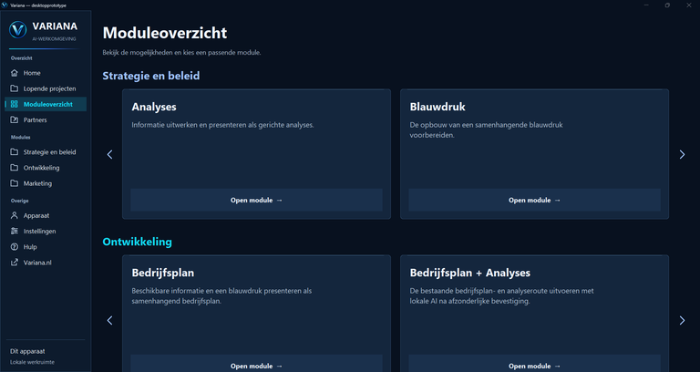

Hoe Variana werkt
Gespecialiseerd onderzoek.
Eén gedeelde structuur.
Variana brengt je organisatie in kaart in een samenhangende blauwdruk: van strategie, markt en aanbod tot processen, mensen en middelen. Vanuit die basis werken we onderzoek, analyses en plannen uit. Je vraag bepaalt welke onderdelen we verdiepen.
Verken het systeemDe samenhang maakt het verschil
Van analyses naar blauwdruk.
Van blauwdruk naar verdieping.
Analyses brengen relevante informatie en vragen in beeld. De organisatieblauwdruk verbindt die inzichten met strategie, markt, mensen, processen en middelen. Specialistische modules bouwen daarop voort, gericht op het vraagstuk dat je wilt uitwerken.
Zo staat een keuze over groei, marketing of inrichting in de context van je hele organisatie. Nieuwe informatie kan aanleiding geven om uitgangspunten en samenhangende uitwerkingen opnieuw te bekijken.
Ontdek hoe de onderdelen samenwerken

Vergroot het softwareschermKlik op een onderdeel voor uitleg
- 01 / InzichtAnalysesInformatie, bevindingen en uitgangspunten
- 02 / SamenhangOrganisatieblauwdrukStrategie, markt, mensen, processen en middelen
- 03 / VerdiepingSpecialistische modulesGericht verder werken vanuit de blauwdruk
Dit schema licht de samenhang toe. Welke onderdelen worden ingezet, volgt uit je vraag en de beschikbare informatie.
Van vraag naar besluitvorming
Zo werk je van vraag naar overzicht.
We leggen eerst de organisatie en je vraag vast in een blauwdruk. Daarna onderzoeken we wat nodig is voor je beslissing. Nieuwe inzichten worden verwerkt in diezelfde blauwdruk, zodat plannen en analyses op actuele uitgangspunten blijven aansluiten.
- 01 / Je vraag
Wat wil je bereiken?
We bepalen welke beslissing voorligt, wat je wilt bereiken en welke informatie al beschikbaar is. Zo is duidelijk waarvoor je de uitkomst gaat gebruiken.
- 02 / De blauwdruk
Je organisatie als geheel.
Strategie, aanbod, markt, processen, mensen en middelen worden in samenhang uitgewerkt. Deze organisatieblauwdruk vormt het vertrekpunt voor de verdere analyses en dienstverlening.
- 03 / Het onderzoek
Verdieping waar het ertoe doet.
We onderzoeken de relevante vragen, bijvoorbeeld over markt, haalbaarheid, capaciteit of risico’s. Daarbij blijft zichtbaar welke bronnen de bevindingen ondersteunen, welke aannames zijn gebruikt en welke informatie nog ontbreekt.
- 04 / Je beslissing
Van inzicht naar een afweging of plan.
De uitwerking brengt de onderbouwing en gevolgen voor je organisatie samen. Je ontvangt, passend bij je vraag, een analyse, adviesrapport, blauwdruk of bedrijfsuitvoeringsplan. Je organisatie neemt de beslissing.
Nieuwe informatie werkt door. Verandert een uitgangspunt tijdens het onderzoek? Dan bekijken we welke analyses en plannen hierdoor geraakt worden en werken we de blauwdruk daarop bij.
Verken de onderzoekskaartJe eigen vraagstuk
Grip krijgen op
een complex vraagstuk?
Ontdek hoe Variana je helpt om je organisatie te overzien en keuzes te onderbouwen. Bekijk ook de tarieven en richtprijzen.